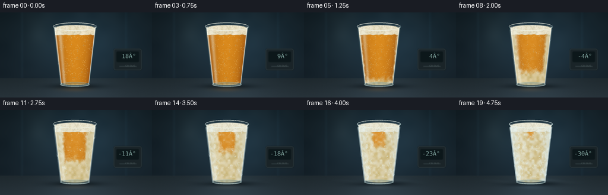
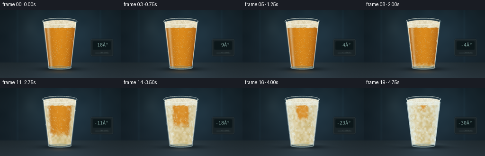
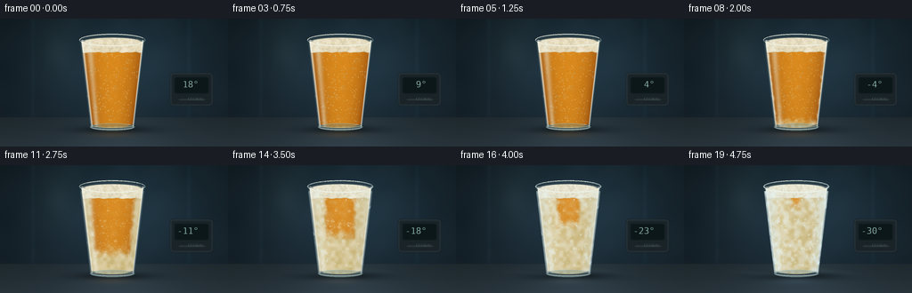
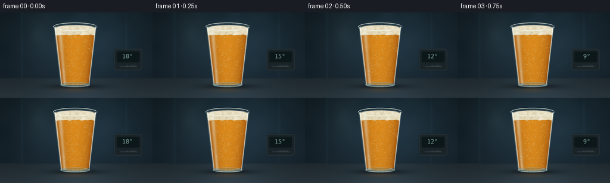

CODING AGENTS AS PIXEL WORLD MODELS
traex/GPT-6.1-Sol · phygen_095
点击播放 · 原生 RGB 像素
逐轮保存的候选
回放视频、检查图与代码变化。
每份候选均可单独播放。实际图片检查记录在下方工具轨迹中。
候选 01播放与检查图
点击播放 · 原生 RGB 像素

展开代码变化
--- 上一保存版本
+++ 本次保存版本
@@ -0,0 +1,231 @@
+from pathlib import Path
+import math
+import numpy as np
+from PIL import Image, ImageDraw, ImageFilter, ImageFont
+from artifact_io import save
+
+ROOT = Path(__file__).resolve().parent
+S = 4
+W,H = 256*S,144*S
+rng = np.random.default_rng(1095)
+y,x = np.mgrid[0:H,0:W].astype(float)/S
+
+def field(nw,nh):
+ a=rng.random((nh,nw))*255
+ return np.asarray(Image.fromarray(a.astype('uint8')).resize((W,H),Image.Resampling.BICUBIC),float)/255
+n1=field(64,36); n2=field(180,100); n3=field(512,288); broad=field(14,9)
+texture=(n1-.5)*.6+(n2-.5)*.3+(n3-.5)*.1
+
+def blend(a,c,alpha):
+ alpha=np.clip(alpha,0,1)
+ if alpha.ndim==2: alpha=alpha[...,None]
+ return a*(1-alpha)+np.asarray(c)*alpha
+
+def ellipse(cx,cy,rx,ry):
+ return np.clip((1-((x-cx)/rx)**2-((y-cy)/ry)**2)*S,0,1)
+
+def layer(): return Image.new('RGBA',(W,H))
+def ell(d,bb,fill,outline=None,width=1):
+ d.ellipse(tuple(v*S for v in bb),fill=fill,outline=outline,width=max(1,int(width*S)))
+def line(d,pts,fill,width=1):
+ d.line([(int(a*S),int(b*S)) for a,b in pts],fill=fill,width=max(1,int(width*S)))
+
+# Quiet, out-of-focus interior of a chilled cabinet and a brushed worktop.
+glow=np.exp(-((x-142)/97)**2-((y-52)/72)**2)
+bg=np.stack([15+16*glow+6*y/144,25+27*glow+7*y/144,30+34*glow+10*y/144],-1)
+bg += (broad[...,None]-.5)*3
+for xx in [37,212]:
+ bg += np.exp(-((x-xx)/2.3)**2)[...,None]*np.array([2,4,5])
+backlight=np.exp(-((x-65)/23)**2-((y-36)/40)**2)
+bg += backlight[...,None]*np.array([8,9,8])
+# Counter plane, with a low horizon and reflected light.
+table=y>111
+counter=np.stack([30+9*(y-111)/33,40+10*(y-111)/33,45+12*(y-111)/33],-1)
+counter += np.exp(-((x-134)/69)**2)[...,None]*np.array([10,14,17])
+counter += (n3-.5)[...,None]*1.2
+bg=np.where(table[...,None],counter,bg)
+shadow=np.exp(-((x-128)/43)**2-((y-125)/4.4)**2)*.68
+bg=blend(bg,[6,13,17],shadow)
+# Defocused background thermometer, modest but readable.
+therm=layer();d=ImageDraw.Draw(therm)
+d.rounded_rectangle((191*S,61*S,239*S,98*S),radius=4*S,fill=(26,36,40,255),outline=(61,75,78,160),width=S)
+d.rounded_rectangle((196*S,66*S,234*S,84*S),radius=2*S,fill=(12,23,26,255))
+line(d,[(201,91),(230,91)],(96,108,108,110),.5)
+therm=therm.filter(ImageFilter.GaussianBlur(.6*S))
+# Glass geometry.
+cy=24.; bottom=122.
+radius=37-12*np.clip((y-cy)/(bottom-cy),0,1)
+u=(x-126)/radius
+side=(y>=24)&(y<=122)&(abs(u)<1)
+body=np.maximum(side.astype(float),ellipse(126,24,37,7))
+body=np.maximum(body,ellipse(126,122,25,4))
+inner_r=radius-2.1
+v=(x-126)/inner_r
+beer=((y>=34)&(y<=119)&(abs(v)<1)).astype(float)
+beer=np.maximum(beer,ellipse(126,34,32.7,5.2))
+beer=np.maximum(beer,ellipse(126,119,22.8,3.8))
+beer*=body
+# Detailed foam texture and bubbles; all persist coherently through the timelapse.
+bubbles=[]
+for _ in range(155):
+ yy=rng.uniform(39,115);rr=37-12*(yy-24)/98-4
+ xx=126+rng.uniform(-.90,.90)*rr
+ bubbles.append((xx,yy,rng.uniform(.18,.70),rng.uniform(0,1)))
+drops=[]
+for _ in range(95):
+ yy=rng.uniform(28,120);rr=37-12*(yy-24)/98
+ xx=126+rng.uniform(-.95,.95)*rr
+ drops.append((xx,yy,rng.uniform(.25,.9),rng.uniform(.0,1)))
+# Frost fern skeletons grow from cold walls, not a screen overlay.
+crystal_segments=[]
+for j in range(100):
+ yy=rng.uniform(35,120)
+ r=37-12*(yy-24)/98-1.7
+ side_sign=rng.choice([-1,1])
+ xx=126+side_sign*r*rng.uniform(.60,.98)
+ if j>70: xx=126+rng.uniform(-.8,.8)*r
+ ang=(-math.pi/2)+rng.uniform(-.8,.8)
+ leng=rng.uniform(3,11)
+ birth=rng.uniform(.18,.78)
+ # Main stem and paired angular needles.
+ end=(xx+math.cos(ang)*leng,yy+math.sin(ang)*leng)
+ crystal_segments.append(((xx,yy),end,birth,rng.uniform(.13,.27)))
+ for k in range(2,8):
+ f=k/9
+ px=xx+(end[0]-xx)*f;py=yy+(end[1]-yy)*f
+ ll=leng*(1-f)*rng.uniform(.24,.48)
+ for sg in [-1,1]:
+ aa=ang+sg*.78
+ ee=(px+math.cos(aa)*ll,py+math.sin(aa)*ll)
+ crystal_segments.append(((px,py),ee,birth+.04+f*.10,rng.uniform(.1,.19)))
+
+frames=[]
+font=ImageFont.truetype('/usr/share/fonts/truetype/dejavu/DejaVuSansMono.ttf',10*S)
+smallfont=ImageFont.truetype('/usr/share/fonts/truetype/dejavu/DejaVuSans.ttf',4*S)
+for frame in range(20):
+ t=frame/19
+ cold=np.clip((t-.12)/.88,0,1)
+ a=bg.copy()
+ # Subtle amber reflection under the glass cools as it freezes.
+ refl=np.exp(-((x-126)/23)**2-((y-130)/4)**2)*.27
+ a=blend(a,[130-44*cold,87+25*cold,40+89*cold],refl)
+ a=blend(a,[129,164,170],body*.13)
+ # Transparent beer: optical path length controls the golden shade.
+ thickness=np.sqrt(np.maximum(0,1-v*v))
+ gold=np.stack([139+76*thickness+10*(119-y)/85,
+ 67+67*thickness+7*(119-y)/85,
+ 10+17*thickness],-1)
+ gold += (texture*6)[...,None]
+ # Visible incoming ice front from the walls and base, following thermal gradients.
+ wall=1-np.clip(abs(v),0,1)
+ depth=np.minimum(wall*.86,(119-y)/100)
+ threshold=cold*.82-.02
+ freezing=np.clip((threshold-depth+texture*.10)*8,0,1)
+ # More highly scattering ice retains a honey center early and turns pale at low temperature.
+ icy=np.stack([205+24*n1,188+29*n1,128+50*n1],-1)
+ icy += np.exp(-((x-109)/9)**2)[...,None]*np.array([12,15,22])
+ gold=blend(gold,icy,freezing*.90)
+ a=blend(a,gold,beer*.97)
+ # Natural slightly domed head; foam coarsens/collapses a little then freezes.
+ foam_lower=38-1.0*t + (np.sin((x-91)*.29)+np.sin((x-93)*.61))*.30
+ foam=((y>=26)&(y<=foam_lower)&(abs(v)<1)).astype(float)
+ foam=np.maximum(foam,ellipse(126,26,34.8,5.1))
+ foam*=body
+ foam_col=np.stack([228+14*n1,217+16*n1,184+25*n1],-1)
+ foam_col=blend(foam_col,[237,243,235],cold*.48)
+ foam_col-=(np.clip((n2-.51)*2.9,0,1)*14)[...,None]
+ foam_col-=np.exp(-((y-foam_lower)/.65)**2)[...,None]*np.array([17,21,28])
+ a=blend(a,foam_col,foam*.99)
+ # Surface ice/frost advances patchily: fine roughness and scattering along the cold edges.
+ edge_band=np.clip((abs(u)-.59)/.37,0,1)
+ frost=(cold**1.5)*(.10+.54*edge_band+.13*n1)
+ frost += np.clip((cold-.5)*1.6,0,1)*np.clip((n1-.35)*1.4,0,1)*.25
+ frost*=body*(y>29)*(y<121)
+ a=blend(a,[218,235,236],frost)
+ # Optically glossy glass highlights, tapered with the side wall.
+ left=np.exp(-((u+.91)/.036)**2)
+ right=np.exp(-((u-.93)/.023)**2)
+ broadshine=np.exp(-((u+.70)/.095)**2)*(.39+.05*np.sin(y*.06))
+ shine=(left*.7+right*.8+broadshine)*(y>=24)*(y<122)*body
+ a=blend(a,[242,246,235],shine*(1-.50*cold))
+ dark_edge=np.exp(-((abs(u)-.997)/.018)**2)*body*(y>25)
+ a=blend(a,[22,45,50],dark_edge*.55)
+ # Ice facets inside liquid become visible only when nucleation has begun.
+ facets=layer();df=ImageDraw.Draw(facets)
+ rlocal=np.random.default_rng(21)
+ for j in range(90):
+ yy=rlocal.uniform(42,116); rr=37-12*(yy-24)/98-4
+ xx=126+rlocal.uniform(-.9,.9)*rr
+ birth=rlocal.uniform(.32,.91)
+ prog=np.clip((t-birth)*4,0,1)
+ sz=rlocal.uniform(.8,3.2)*prog
+ if prog>0:
+ col=(242,244,218,int(65*prog))
+ df.polygon([(int((xx-sz)*S),int(yy*S)),(int(xx*S),int((yy-sz*.8)*S)),(int((xx+sz*.7)*S),int((yy+.3*sz)*S)),(int((xx-.4*sz)*S),int((yy+sz*.55)*S))],fill=col)
+ line(df,[(xx-sz,yy),(xx,yy-sz*.8),(xx+sz*.7,yy+.3*sz)],(251,254,245,int(75*prog)),.16)
+ im=Image.fromarray(np.clip(a,0,255).astype('uint8')).convert('RGBA')
+ im=Image.alpha_composite(im,facets)
+ details=layer();dd=ImageDraw.Draw(details)
+ # Carbonation slows then becomes trapped in freezing beer.
+ for xx,yy,rr,p in bubbles:
+ move=(1-cold)**2*(frame*.45)
+ yy=39+(yy-39-move)%77
+ opacity=int(105*(1-.65*cold))
+ ell(dd,(xx-rr,yy-rr,xx+rr,yy+rr),(244,212,112,int(opacity*.13)),(255,232,172,opacity),.13)
+ ell(dd,(xx-rr*.5,yy-rr*.8,xx,yy-rr*.25),(255,245,206,int(opacity*.8)))
+ # Small holes in beer foam, rather than an untextured white cap.
+ rf=np.random.default_rng(435)
+ for j in range(150):
+ xx=rf.uniform(93,159); yy=rf.uniform(23,37); r=rf.uniform(.18,.83)
+ if ((xx-126)/34.5)**2+((yy-26)/5)**2>1 and yy<27: continue
+ if abs(xx-126)>34-(yy-26)*.14: continue
+ ell(dd,(xx-r,yy-r*.55,xx+r,yy+r*.55),(169,149,100,int(75*(1-.6*cold))), (252,247,221,int(95*(1-.4*cold))),.1)
+ # Condensation beads become increasingly white and granular.
+ for xx,yy,rr,p in drops:
+ alp=int(55+50*p)
+ ell(dd,(xx-rr,yy-rr*.8,xx+rr,yy+rr*1.2),(35,54,53,int(40*(1-cold))), (213,235,231,int(alp*(1-.5*cold))),.14)
+ ell(dd,(xx-rr*.55,yy-rr*.6,xx,yy-rr*.15),(252,251,234,int(alp*(1-.25*cold))))
+ for start,end,birth,width in crystal_segments:
+ prog=np.clip((t-birth)/.23,0,1)
+ if prog:
+ ex=start[0]+(end[0]-start[0])*prog; ey=start[1]+(end[1]-start[1])*prog
+ # Clipping is handled below with the glass alpha mask.
+ line(dd,[start,(ex,ey)],(229,245,247,int(155*prog)),width)
+ da=np.asarray(details).copy()
+ da[:,:,3]=(da[:,:,3]*body).astype('uint8')
+ im=Image.alpha_composite(im,Image.fromarray(da))
+ # Thick glass heel and top rim: highlights define the vessel even under frost.
+ rim=layer();dr=ImageDraw.Draw(rim)
+ ell(dr,(101,117.8,151,126),(94,131,139,85),(157,189,189,170),.7)
+ dr.arc((102*S,119*S,150*S,125*S),0,180,fill=(217,233,225,180),width=S)
+ dr.arc((103*S,118*S,149*S,123*S),0,180,fill=(236,222,161,int(160*(1-cold))),width=S)
+ ell(dr,(89,17,163,31),None,(177,207,206,185),.6)
+ dr.arc((89*S,17*S,163*S,31*S),180,340,fill=(245,247,232,210),width=S)
+ dr.arc((90*S,18*S,162*S,31*S),12,167,fill=(239,244,232,220),width=S)
+ # Delicate powder accumulation on rim and at the foot at very low temperature.
+ rf=np.random.default_rng(902)
+ for j in range(330):
+ ang=rf.uniform(0,math.tau)
+ xx=126+36.2*math.cos(ang);yy=24+6.4*math.sin(ang)
+ birth=rf.uniform(.36,.85)
+ pp=np.clip((t-birth)*4,0,1)
+ if pp:
+ rr=rf.uniform(.15,.65)*pp
+ ell(dr,(xx-rr,yy-rr*.7,xx+rr,yy+rr*.7),(232,246,243,int(160*pp)))
+ im=Image.alpha_composite(im,rim)
+ im=Image.alpha_composite(im,therm)
+ display=layer();dt=ImageDraw.Draw(display)
+ temp=round(18-48*(t**.9))
+ dt.text((199*S,68*S),f'{temp:3d}°',font=font,fill=(168,213,205,225))
+ dt.text((211*S,88*S),'CELSIUS',font=smallfont,fill=(135,157,158,170))
+ display=display.filter(ImageFilter.GaussianBlur(.22*S))
+ im=Image.alpha_composite(im,display)
+ # A faint cold haze floats around the base without obscuring the subject.
+ arr=np.asarray(im.convert('RGB')).astype(float)
+ mist=np.exp(-((y-(121+2*np.sin(x*.06+t*2)))/3)**2)*np.exp(-((x-128)/56)**2)*max(0,t-.55)*.17
+ arr=blend(arr,[170,202,212],mist)
+ # Film-like microtexture and careful supersampling.
+ arr=np.clip(arr,0,255).astype('uint8')
+ out=Image.fromarray(arr).resize((256,144),Image.Resampling.LANCZOS)
+ frames.append(np.asarray(out))
+save(np.stack(frames).astype(np.uint8), ROOT)
候选 02播放与检查图
点击播放 · 原生 RGB 像素

展开代码变化
--- 上一保存版本
+++ 本次保存版本
@@ -104,7 +104,7 @@
smallfont=ImageFont.truetype('/usr/share/fonts/truetype/dejavu/DejaVuSans.ttf',4*S)
for frame in range(20):
t=frame/19
- cold=np.clip((t-.12)/.88,0,1)
+ cold=np.clip((t-.34)/.66,0,1)
a=bg.copy()
# Subtle amber reflection under the glass cools as it freezes.
refl=np.exp(-((x-126)/23)**2-((y-130)/4)**2)*.27
候选 03播放与检查图

候选 04播放与检查图
点击播放 · 原生 RGB 像素

展开代码变化
代码未变化；重新保存了产物。
候选 05播放与检查图
点击播放 · 原生 RGB 像素

展开代码变化
--- 上一保存版本
+++ 本次保存版本
@@ -186,7 +186,7 @@
ell(dd,(xx-rr,yy-rr*.8,xx+rr,yy+rr*1.2),(35,54,53,int(40*(1-cold))), (213,235,231,int(alp*(1-.5*cold))),.14)
ell(dd,(xx-rr*.55,yy-rr*.6,xx,yy-rr*.15),(252,251,234,int(alp*(1-.25*cold))))
for start,end,birth,width in crystal_segments:
- prog=np.clip((t-birth)/.23,0,1)
+ prog=np.clip((t-(.34+.66*birth))/.17,0,1)
if prog:
ex=start[0]+(end[0]-start[0])*prog; ey=start[1]+(end[1]-start[1])*prog
# Clipping is handled below with the glass alpha mask.
候选 06播放与检查图
候选 07播放与检查图
点击播放 · 原生 RGB 像素


展开代码变化
--- 上一保存版本
+++ 本次保存版本
@@ -216,7 +216,7 @@
im=Image.alpha_composite(im,therm)
display=layer();dt=ImageDraw.Draw(display)
temp=round(18-48*(t**.9))
- dt.text((199*S,68*S),f'{temp:3d}°',font=font,fill=(168,213,205,225))
+ dt.text((199*S,68*S),f'{temp:3d}°',font=font,fill=(168,213,205,225))
dt.text((211*S,88*S),'CELSIUS',font=smallfont,fill=(135,157,158,170))
display=display.filter(ImageFilter.GaussianBlur(.22*S))
im=Image.alpha_composite(im,display)
可观测工具轨迹
实际执行的命令与返回图片。
命令 1exit 0
/bin/bash -lc 'ls -la && cat prompt.txt && cat GENERATION_RULES.md && cat task_spec.json'
命令 2exit 0
/bin/bash -lc 'cat artifact_io.py'
命令 3exit 0
/bin/bash -lc 'fc-list | head -5'
命令 4exit 0
/bin/bash -lc "cat > generate.py <<'PY'
from pathlib import Path
import math
import numpy as np
from PIL import Image, ImageDraw, ImageFilter, ImageFont
from artifact_io import save
ROOT = Path(__file__).resolve().parent
S = 4
W,H = 256*S,144*S
rng = np.random.default_rng(1095)
y,x = np.mgrid[0:H,0:W].astype(float)/S
def field(nw,nh):
a=rng.random((nh,nw))*255
return np.asarray(Image.fromarray(a.astype('uint8')).resize((W,H),Image.Resampling.BICUBIC),float)/255
n1=field(64,36); n2=field(180,100); n3=field(512,288); broad=field(14,9)
texture=(n1-.5)*.6+(n2-.5)*.3+(n3-.5)*.1
def blend(a,c,alpha):
alpha=np.clip(alpha,0,1)
if alpha.ndim==2: alpha=alpha[...,None]
return a*(1-alpha)+np.asarray(c)*alpha
def ellipse(cx,cy,rx,ry):
return np.clip((1-((x-cx)/rx)**2-((y-cy)/ry)**2)*S,0,1)
def layer(): return Image.new('RGBA',(W,H))
def ell(d,bb,fill,outline=None,width=1):
d.ellipse(tuple(v*S for v in bb),fill=fill,outline=outline,width=max(1,int(width*S)))
def line(d,pts,fill,width=1):
d.line([(int(a*S),int(b*S)) for a,b in pts],fill=fill,width=max(1,int(width*S)))
# Quiet, out-of-focus interior of a chilled cabinet and a brushed worktop.
glow=np.exp(-((x-142)/97)**2-((y-52)/72)**2)
bg=np.stack([15+16*glow+6*y/144,25+27*glow+7*y/144,30+34*glow+10*y/144],-1)
bg += (broad[...,None]-.5)*3
for xx in [37,212]:
bg += np.exp(-((x-xx)/2.3)**2)[...,None]*np.array([2,4,5])
backlight=np.exp(-((x-65)/23)**2-((y-36)/40)**2)
bg += backlight[...,None]*np.array([8,9,8])
# Counter plane, with a low horizon and reflected light.
table=y>111
counter=np.stack([30+9*(y-111)/33,40+10*(y-111)/33,45+12*(y-111)/33],-1)
counter += np.exp(-((x-134)/69)**2)[...,None]*np.array([10,14,17])
counter += (n3-.5)[...,None]*1.2
bg=np.where(table[...,None],counter,bg)
shadow=np.exp(-((x-128)/43)**2-((y-125)/4.4)**2)*.68
bg=blend(bg,[6,13,17],shadow)
# Defocused background thermometer, modest but readable.
therm=layer();d=ImageDraw.Draw(therm)
d.rounded_rectangle((191*S,61*S,239*S,98*S),radius=4*S,fill=(26,36,40,255),outline=(61,75,78,160),width=S)
d.rounded_rectangle((196*S,66*S,234*S,84*S),radius=2*S,fill=(12,23,26,255))
line(d,[(201,91),(230,91)],(96,108,108,110),.5)
therm=therm.filter(ImageFilter.GaussianBlur(.6*S))
# Glass geometry.
cy=24.; bottom=122.
radius=37-12*np.clip((y-cy)/(bottom-cy),0,1)
u=(x-126)/radius
side=(y>=24)&(y<=122)&(abs(u)<1)
body=np.maximum(side.astype(float),ellipse(126,24,37,7))
body=np.maximum(body,ellipse(126,122,25,4))
inner_r=radius-2.1
v=(x-126)/inner_r
beer=((y>=34)&(y<=119)&(abs(v)<1)).astype(float)
beer=np.maximum(beer,ellipse(126,34,32.7,5.2))
beer=np.maximum(beer,ellipse(126,119,22.8,3.8))
beer*=body
# Detailed foam texture and bubbles; all persist coherently through the timelapse.
bubbles=[]
for _ in range(155):
yy=rng.uniform(39,115);rr=37-12*(yy-24)/98-4
xx=126+rng.uniform(-.90,.90)*rr
bubbles.append((xx,yy,rng.uniform(.18,.70),rng.uniform(0,1)))
drops=[]
for _ in range(95):
yy=rng.uniform(28,120);rr=37-12*(yy-24)/98
xx=126+rng.uniform(-.95,.95)*rr
drops.append((xx,yy,rng.uniform(.25,.9),rng.uniform(.0,1)))
# Frost fern skeletons grow from cold walls, not a screen overlay.
crystal_segments=[]
for j in range(100):
yy=rng.uniform(35,120)
r=37-12*(yy-24)/98-1.7
side_sign=rng.choice([-1,1])
xx=126+side_sign*r*rng.uniform(.60,.98)
if j>70: xx=126+rng.uniform(-.8,.8)*r
ang=(-math.pi/2)+rng.uniform(-.8,.8)
leng=rng.uniform(3,11)
birth=rng.uniform(.18,.78)
# Main stem and paired angular needles.
end=(xx+math.cos(ang)*leng,yy+math.sin(ang)*leng)
crystal_segments.append(((xx,yy),end,birth,rng.uniform(.13,.27)))
for k in range(2,8):
f=k/9
px=xx+(end[0]-xx)*f;py=yy+(end[1]-yy)*f
ll=leng*(1-f)*rng.uniform(.24,.48)
for sg in [-1,1]:
aa=ang+sg*.78
ee=(px+math.cos(aa)*ll,py+math.sin(aa)*ll)
crystal_segments.append(((px,py),ee,birth+.04+f*.10,rng.uniform(.1,.19)))
frames=[]
font=ImageFont.truetype('/usr/share/fonts/truetype/dejavu/DejaVuSansMono.ttf',10*S)
smallfont=ImageFont.truetype('/usr/share/fonts/truetype/dejavu/DejaVuSans.ttf',4*S)
for frame in range(20):
t=frame/19
cold=np.clip((t-.12)/.88,0,1)
a=bg.copy()
# Subtle amber reflection under the glass cools as it freezes.
refl=np.exp(-((x-126)/23)**2-((y-130)/4)**2)*.27
a=blend(a,[130-44*cold,87+25*cold,40+89*cold],refl)
a=blend(a,[129,164,170],body*.13)
# Transparent beer: optical path length controls the golden shade.
thickness=np.sqrt(np.maximum(0,1-v*v))
gold=np.stack([139+76*thickness+10*(119-y)/85,
67+67*thickness+7*(119-y)/85,
10+17*thickness],-1)
gold += (texture*6)[...,None]
# Visible incoming ice front from the walls and base, following thermal gradients.
wall=1-np.clip(abs(v),0,1)
depth=np.minimum(wall*.86,(119-y)/100)
threshold=cold*.82-.02
freezing=np.clip((threshold-depth+texture*.10)*8,0,1)
# More highly scattering ice retains a honey center early and turns pale at low temperature.
icy=np.stack([205+24*n1,188+29*n1,128+50*n1],-1)
icy += np.exp(-((x-109)/9)**2)[...,None]*np.array([12,15,22])
gold=blend(gold,icy,freezing*.90)
a=blend(a,gold,beer*.97)
# Natural slightly domed head; foam coarsens/collapses a little then freezes.
foam_lower=38-1.0*t + (np.sin((x-91)*.29)+np.sin((x-93)*.61))*.30
foam=((y>=26)&(y<=foam_lower)&(abs(v)<1)).astype(float)
foam=np.maximum(foam,ellipse(126,26,34.8,5.1))
foam*=body
foam_col=np.stack([228+14*n1,217+16*n1,184+25*n1],-1)
foam_col=blend(foam_col,[237,243,235],cold*.48)
foam_col-=(np.clip((n2-.51)*2.9,0,1)*14)[...,None]
foam_col-=np.exp(-((y-foam_lower)/.65)**2)[...,None]*np.array([17,21,28])
a=blend(a,foam_col,foam*.99)
# Surface ice/frost advances patchily: fine roughness and scattering along the cold edges.
edge_band=np.clip((abs(u)-.59)/.37,0,1)
frost=(cold**1.5)*(.10+.54*edge_band+.13*n1)
frost += np.clip((cold-.5)*1.6,0,1)*np.clip((n1-.35)*1.4,0,1)*.25
frost*=body*(y>29)*(y<121)
a=blend(a,[218,235,236],frost)
# Optically glossy glass highlights, tapered with the side wall.
left=np.exp(-((u+.91)/.036)**2)
right=np.exp(-((u-.93)/.023)**2)
broadshine=np.exp(-((u+.70)/.095)**2)*(.39+.05*np.sin(y*.06))
shine=(left*.7+right*.8+broadshine)*(y>=24)*(y<122)*body
a=blend(a,[242,246,235],shine*(1-.50*cold))
dark_edge=np.exp(-((abs(u)-.997)/.018)**2)*body*(y>25)
a=blend(a,[22,45,50],dark_edge*.55)
# Ice facets inside liquid become visible only when nucleation has begun.
facets=layer();df=ImageDraw.Draw(facets)
rlocal=np.random.default_rng(21)
for j in range(90):
yy=rlocal.uniform(42,116); rr=37-12*(yy-24)/98-4
xx=126+rlocal.uniform(-.9,.9)*rr
birth=rlocal.uniform(.32,.91)
prog=np.clip((t-birth)*4,0,1)
sz=rlocal.uniform(.8,3.2)*prog
if prog>0:
col=(242,244,218,int(65*prog))
df.polygon([(int((xx-sz)*S),int(yy*S)),(int(xx*S),int((yy-sz*.8)*S)),(int((xx+sz*.7)*S),int((yy+.3*sz)*S)),(int((xx-.4*sz)*S),int((yy+sz*.55)*S))],fill=col)
line(df,[(xx-sz,yy),(xx,yy-sz*.8),(xx+sz*.7,yy+.3*sz)],(251,254,245,int(75*prog)),.16)
im=Image.fromarray(np.clip(a,0,255).astype('uint8')).convert('RGBA')
im=Image.alpha_composite(im,facets)
details=layer();dd=ImageDraw.Draw(details)
# Carbonation slows then becomes trapped in freezing beer.
for xx,yy,rr,p in bubbles:
move=(1-cold)**2*(frame*.45)
yy=39+(yy-39-move)%77
opacity=int(105*(1-.65*cold))
ell(dd,(xx-rr,yy-rr,xx+rr,yy+rr),(244,212,112,int(opacity*.13)),(255,232,172,opacity),.13)
ell(dd,(xx-rr*.5,yy-rr*.8,xx,yy-rr*.25),(255,245,206,int(opacity*.8)))
# Small holes in beer foam, rather than an untextured white cap.
rf=np.random.default_rng(435)
for j in range(150):
xx=rf.uniform(93,159); yy=rf.uniform(23,37); r=rf.uniform(.18,.83)
if ((xx-126)/34.5)**2+((yy-26)/5)**2>1 and yy<27: continue
if abs(xx-126)>34-(yy-26)*.14: continue
ell(dd,(xx-r,yy-r*.55,xx+r,yy+r*.55),(169,149,100,int(75*(1-.6*cold))), (252,247,221,int(95*(1-.4*cold))),.1)
# Condensation beads become increasingly white and granular.
for xx,yy,rr,p in drops:
alp=int(55+50*p)
ell(dd,(xx-rr,yy-rr*.8,xx+rr,yy+rr*1.2),(35,54,53,int(40*(1-cold))), (213,235,231,int(alp*(1-.5*cold))),.14)
ell(dd,(xx-rr*.55,yy-rr*.6,xx,yy-rr*.15),(252,251,234,int(alp*(1-.25*cold))))
for start,end,birth,width in crystal_segments:
prog=np.clip((t-birth)/.23,0,1)
if prog:
ex=start[0]+(end[0]-start[0])*prog; ey=start[1]+(end[1]-start[1])*prog
# Clipping is handled below with the glass alpha mask.
line(dd,[start,(ex,ey)],(229,245,247,int(155*prog)),width)
da=np.asarray(details).copy()
da[:,:,3]=(da[:,:,3]*body).astype('uint8')
im=Image.alpha_composite(im,Image.fromarray(da))
# Thick glass heel and top rim: highlights define the vessel even under frost.
rim=layer();dr=ImageDraw.Draw(rim)
ell(dr,(101,117.8,151,126),(94,131,139,85),(157,189,189,170),.7)
dr.arc((102*S,119*S,150*S,125*S),0,180,fill=(217,233,225,180),width=S)
dr.arc((103*S,118*S,149*S,123*S),0,180,fill=(236,222,161,int(160*(1-cold))),width=S)
ell(dr,(89,17,163,31),None,(177,207,206,185),.6)
dr.arc((89*S,17*S,163*S,31*S),180,340,fill=(245,247,232,210),width=S)
dr.arc((90*S,18*S,162*S,31*S),12,167,fill=(239,244,232,220),width=S)
# Delicate powder accumulation on rim and at the foot at very low temperature.
rf=np.random.default_rng(902)
for j in range(330):
ang=rf.uniform(0,math.tau)
xx=126+36.2*math.cos(ang);yy=24+6.4*math.sin(ang)
birth=rf.uniform(.36,.85)
pp=np.clip((t-birth)*4,0,1)
if pp:
rr=rf.uniform(.15,.65)*pp
ell(dr,(xx-rr,yy-rr*.7,xx+rr,yy+rr*.7),(232,246,243,int(160*pp)))
im=Image.alpha_composite(im,rim)
im=Image.alpha_composite(im,therm)
display=layer();dt=ImageDraw.Draw(display)
temp=round(18-48*(t**.9))
dt.text((199*S,68*S),f'{temp:3d}°',font=font,fill=(168,213,205,225))
dt.text((211*S,88*S),'CELSIUS',font=smallfont,fill=(135,157,158,170))
display=display.filter(ImageFilter.GaussianBlur(.22*S))
im=Image.alpha_composite(im,display)
# A faint cold haze floats around the base without obscuring the subject.
arr=np.asarray(im.convert('RGB')).astype(float)
mist=np.exp(-((y-(121+2*np.sin(x*.06+t*2)))/3)**2)*np.exp(-((x-128)/56)**2)*max(0,t-.55)*.17
arr=blend(arr,[170,202,212],mist)
# Film-like microtexture and careful supersampling.
arr=np.clip(arr,0,255).astype('uint8')
out=Image.fromarray(arr).resize((256,144),Image.Resampling.LANCZOS)
frames.append(np.asarray(out))
save(np.stack(frames).astype(np.uint8), ROOT)
PY
python generate.py"命令 5exit 0
/bin/bash -lc "grep 'temp:3d' generate.py && ls -lh pixels.npz index.html"
命令 6exit 0
/bin/bash -lc "python - <<'PY'
p='generate.py'
s=open(p).read().replace('cold=np.clip((t-.12)/.88,0,1)','cold=np.clip((t-.34)/.66,0,1)').replace(\"f'{temp:3d}ð'\", \"f'{temp:3d}°'\")
open(p,'w').write(s)
PY
python generate.py"命令 7exit 0
/bin/bash -lc "python - <<'PY'
s=open('generate.py').read(); a=s[s.index(\"f'{temp:3d}\"):s.index(\"f'{temp:3d}\")+20]; print(ascii(a))
PY"命令 8exit 0
/bin/bash -lc "python - <<'PY'
p='generate.py'
s=open(p).read().replace('ð','°').replace('prog=np.clip((t-birth)/.23,0,1)','prog=np.clip((t-(.34+.66*birth))/.17,0,1)')
open(p,'w').write(s)
PY
python generate.py"命令 9exit 0
/bin/bash -lc "python - <<'PY' p='generate.py';s=open(p).read();s=s.replace(chr(194)+chr(176),chr(176));open(p,'w').write(s) PY python generate.py"
视觉工具实际返回图片 1

保存候选 7 份；完成命令 9 次；可验证图片返回 1 张。原始 API 响应与完整日志保留在本地。